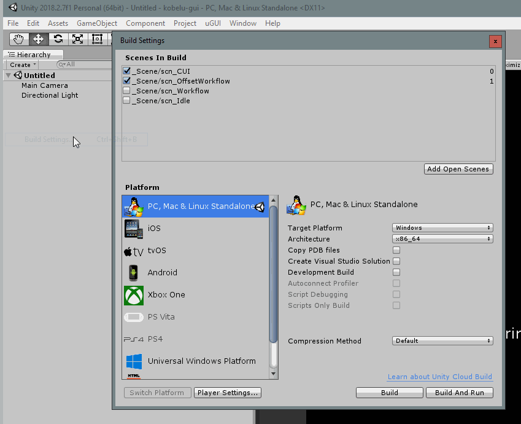

Entwicklungseinstellungen
Dieses Dokument beschreibt die Einrichtung der incluMove GUI Anwendung zur aktiven Entwicklung mit Unity.
Vorraussetzungen
- Unity 2019.4 (am einfachsten über UnityHub)
- Git
- Github Account + ssh Key (für 3rd-Party Pakete)
- kompatible IDE (zB. Visual Studio)
Buildvorgang
Um die Applikation neu zu erstellen muss diese in Unity neu erstellt werden. Im geöffneten Unityprojekt kann das Projekt über Datei > Buildeigenschaften neu gebaut werden.

In den Buildeinstellungen müssen nun die Szenen für den Build ausgewählt werden. Ausgewählt sein müssen scn_CUI_single, scn_Bootstrapper und scn_WorkflowEditor.

Über den Build Button wird nach wahl des Ausgabeordners der Buildprozess durchgeführt.